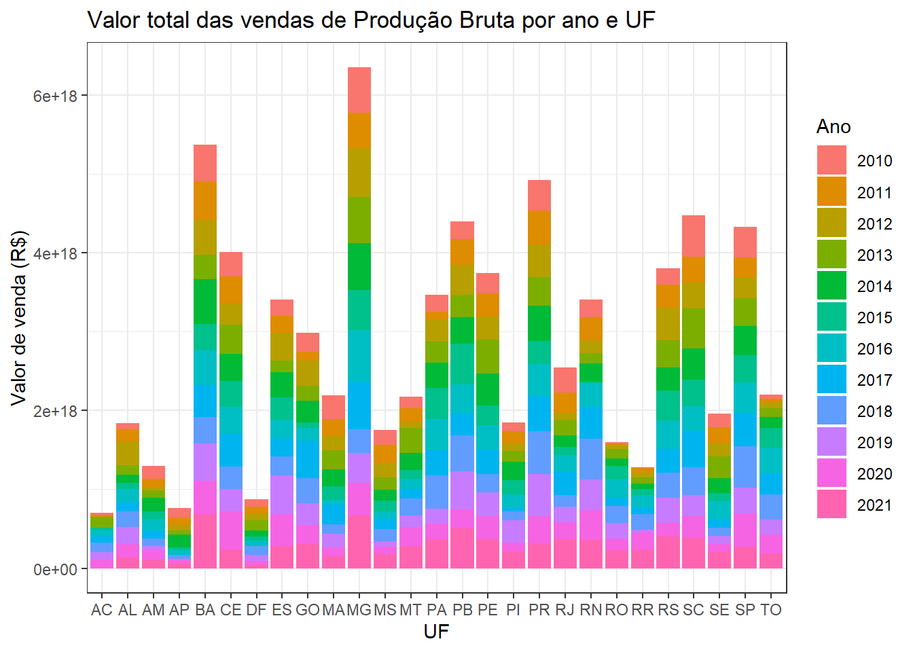
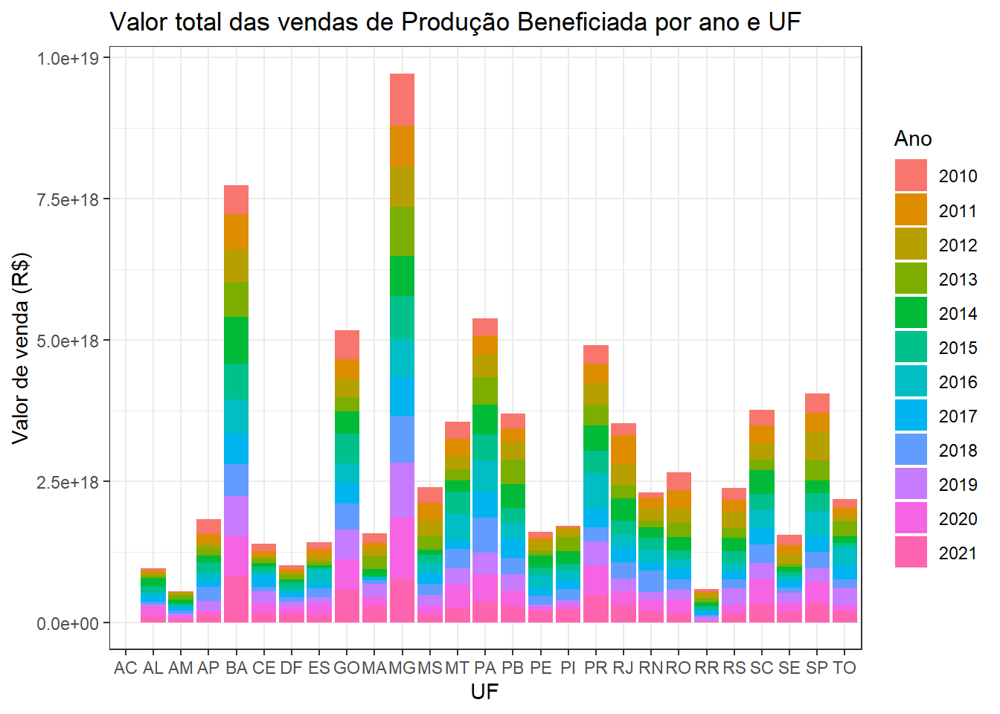
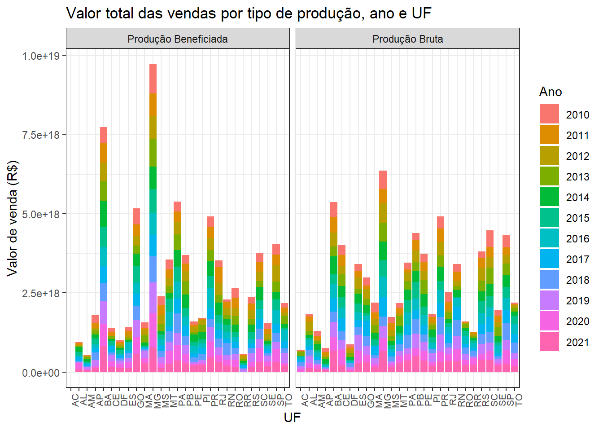

Este é o resultado de um projeto básico feito no ambiente QUARTO, usando linguagem R, dentro do RStudio.
A ideia deste projeto é aplicar os conceitos vistos nas aulas do curso de extensão: “Relatórios Reprodutíveis com R - EaD (Noturno)”, curso de verão 2023, do IME-USP no período de 23/01/2023 à 06/02/2023.
Este curso foi ministrado pela Beatriz Milz, com auxílio dos monitores: Alan da Silva, Alexandre Moura dos Santos, Beatriz Proença Carvalho, Tatyane Paz Dominguez dos Santos Alves. Mais detalhes sobre cada um podem ser encontrados na seguinte página: https://beatrizmilz.github.io/2023-curso-de-verao-ime-usp-relatorios/profs.html
—————————//———————————
Análise de estados que mais vendem minérios, por ano
Na sequencia, foi realizada uma análise da base de dados da Agência Nacional de Mineração - ANM, para ter uma ideia do montante relacionado a vendas de minérios, em especial do ouro e da prata. Para isso, os datasets escolhidos foram: AMB - Produção bruta AMB - Produção beneficiada
Nesta análise serão apresentados os estados brasileiros que mais produzem e os que mais beneficiam metais preciosos como o ouro, a prata.
Da base de dados de produção bruta, inicialmente faz-se necessária a limpeza da base:
Código
comment =NA# importação das bibliotecas:library(tidyverse)
── Attaching core tidyverse packages ──────────────────────── tidyverse 2.0.0 ──
✔ dplyr 1.1.0 ✔ readr 2.1.4
✔ forcats 1.0.0 ✔ stringr 1.5.0
✔ ggplot2 3.4.1 ✔ tibble 3.1.8
✔ lubridate 1.9.2 ✔ tidyr 1.3.0
✔ purrr 1.0.1
── Conflicts ────────────────────────────────────────── tidyverse_conflicts() ──
✖ dplyr::filter() masks stats::filter()
✖ dplyr::lag() masks stats::lag()
ℹ Use the conflicted package (<http://conflicted.r-lib.org/>) to force all conflicts to become errors
Código
library(janitor)
Attaching package: 'janitor'
The following objects are masked from 'package:stats':
chisq.test, fisher.test
Código
ProdBruta <-read_csv("Producao_Bruta.csv")
Rows: 4659 Columns: 14
── Column specification ────────────────────────────────────────────────────────
Delimiter: ","
chr (12): UF, Classe Substância, Substância Mineral, Unidade de Medida - Con...
dbl (1): Ano base
num (1): Valor Venda (R$)
ℹ Use `spec()` to retrieve the full column specification for this data.
ℹ Specify the column types or set `show_col_types = FALSE` to quiet this message.
Rows: 2936 Columns: 18
── Column specification ────────────────────────────────────────────────────────
Delimiter: ","
chr (14): UF, Classe Substância, Substância Mineral, Unidade de Medida - Pro...
dbl (1): Ano base
num (3): Valor Venda (R$), Quantidade Consumo/Utilização na Usina, Quantida...
ℹ Use `spec()` to retrieve the full column specification for this data.
ℹ Specify the column types or set `show_col_types = FALSE` to quiet this message.
Crie um gráfico de barras usando a biblioteca ggplot2:
Código
ggplot(dados_vendaProdBruta, aes(x = uf, y = valor_venda_r, fill =factor(ano_base))) +geom_bar(stat ="identity") +labs(x ="UF", y ="Valor de venda (R$)", fill ="Ano") +ggtitle("Valor total das vendas de Produção Bruta por ano e UF") +theme_bw() +# scale_y_continuous(labels = scales::comma_format()) +#scale_y_continuous(sec.axis = sec_axis(~ . / 1000, name = "Volume de produção (mil unidades)")) +scale_x_discrete(limits =c("AC", "AL", "AM", "AP", "BA", "CE", "DF", "ES", "GO", "MA", "MG", "MS", "MT", "PA", "PB", "PE", "PI", "PR", "RJ", "RN", "RO", "RR", "RS", "SC", "SE", "SP", "TO"))

Código
ggplot(dados_vendaProdBenef, aes(x = uf, y = valor_venda_r, fill =factor(ano_base))) +geom_bar(stat ="identity") +labs(x ="UF", y ="Valor de venda (R$)", fill ="Ano") +ggtitle("Valor total das vendas de Produção Beneficiada por ano e UF") +theme_bw() +# scale_y_continuous(labels = scales::comma_format()) +#scale_y_continuous(sec.axis = sec_axis(~ . / 1000, name = "Volume de produção (mil unidades)")) +scale_x_discrete(limits =c("AC", "AL", "AM", "AP", "BA", "CE", "DF", "ES", "GO", "MA", "MG", "MS", "MT", "PA", "PB", "PE", "PI", "PR", "RJ", "RN", "RO", "RR", "RS", "SC", "SE", "SP", "TO"))

Para se obter um melhor dimensionamento entre as diferenças dos montantes relacionados a venda dos produtos brutos e a venda dos produtos beneficiados, foi utilizada a função faced_wrap, colocando os gráficos lado a lado e dentro da mesma escala:
Código
library(ggplot2)dados_vendaProdBruta$tipo <-"Produção Bruta"dados_vendaProdBenef$tipo <-"Produção Beneficiada"dados_venda <-rbind(dados_vendaProdBruta, dados_vendaProdBenef)ggplot(dados_venda, aes(x = uf, y = valor_venda_r, fill =factor(ano_base))) +geom_bar(stat ="identity") +labs(x ="UF", y ="Valor de venda (R$)", fill ="Ano") +ggtitle("Valor total das vendas por tipo de produção, ano e UF") +theme_bw() +scale_x_discrete(limits =c("AC", "AL", "AM", "AP", "BA", "CE", "DF", "ES", "GO", "MA", "MG", "MS", "MT", "PA", "PB", "PE", "PI", "PR", "RJ", "RN", "RO", "RR", "RS", "SC", "SE", "SP", "TO")) +theme(axis.text.x =element_text(angle =90, size =8, hjust =1)) +facet_wrap(~ tipo, nrow =1# , scales = "free" )

Com intuito de facilitar a visualização ano a ano, outra proposta é usar o shiny para criar um gráfico dinamico, com um slider que ajuste o ano para que o gráfico selecione apenas os valores bases dos estados para o determinado ano:
Código
library(shiny)library(ggplot2)ui <-fluidPage(titlePanel("Valor total das vendas de Produção Bruta por ano e UF"),sidebarLayout(sidebarPanel(sliderInput("ano", "Ano base:", min =min(dados_vendaProdBruta$ano_base), max =max(dados_vendaProdBruta$ano_base), value =max(dados_vendaProdBruta$ano_base)) ),mainPanel(plotOutput("grafico") ) ))server <-function(input, output) { output$grafico <-renderPlot({ dados_venda_filtrado <-subset(dados_vendaProdBruta, ano_base == input$ano)ggplot(dados_venda_filtrado, aes(x = uf, y = valor_venda_r, fill =factor(ano_base))) +geom_bar(stat ="identity") +labs(x ="UF", y ="Valor de venda (R$)", fill ="Ano") +theme_bw() +# scale_y_continuous(labels = scales::comma_format()) +scale_x_discrete(limits =c("AC", "AL", "AM", "AP", "BA", "CE", "DF", "ES", "GO", "MA", "MG", "MS", "MT", "PA", "PB", "PE", "PI", "PR", "RJ", "RN", "RO", "RR", "RS", "SC", "SE", "SP", "TO")) })}shinyApp(ui, server)
Shiny applications not supported in static R Markdown documents
Código
library(shiny)library(ggplot2)ui <-fluidPage(titlePanel("Valor total das vendas de Produção Beneficiada por ano e UF"),sidebarLayout(sidebarPanel(sliderInput("ano", "Ano base:", min =min(dados_vendaProdBenef$ano_base), max =max(dados_vendaProdBenef$ano_base), value =max(dados_vendaProdBenef$ano_base)) ),mainPanel(plotOutput("grafico") ) ))server <-function(input, output) { output$grafico <-renderPlot({ dados_venda_filtrado <-subset(dados_vendaProdBenef, ano_base == input$ano)ggplot(dados_venda_filtrado, aes(x = uf, y = valor_venda_r, fill =factor(ano_base))) +geom_bar(stat ="identity") +labs(x ="UF", y ="Valor de venda (R$)", fill ="Ano") +theme_bw() +# scale_y_continuous(labels = scales::comma_format()) +scale_x_discrete(limits =c("AC", "AL", "AM", "AP", "BA", "CE", "DF", "ES", "GO", "MA", "MG", "MS", "MT", "PA", "PB", "PE", "PI", "PR", "RJ", "RN", "RO", "RR", "RS", "SC", "SE", "SP", "TO")) })}shinyApp(ui, server)
Shiny applications not supported in static R Markdown documents
Segmentação da base de dados, com foco em ouro e prata:
Como tem-se muitos dados e o gráfico fica poluído, dada a relevancia, análise será focada apenas em ouro ou prata, trabalhado apenas um subset da base: